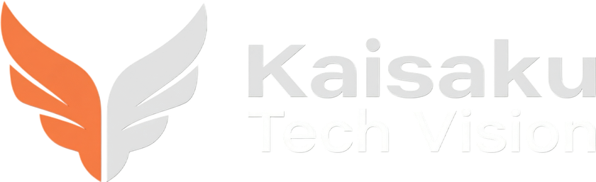

Message
代表挨拶
人道支援と高級自家用飛行。まるで性格の異なるふたつの事業ですが、 私たちにとってはどちらも「静かに、しかし確実に応える」という同じ姿勢の表れです。
災害の現場で命をつなぐ一機と、日常にささやかな煌めきを添える一機。 飛ばす理由は違っても、削ぎ落とした先にある気品を追い求める心は変わりません。
これからも、ふたつの事業を通じて、静けさの中に時折きらめきが現れるような 価値を届けてまいります。
代表取締役CEO 桐生 直人

Company
静けさの中に、時折きらめきが現れる。
性格の異なるふたつの事業を、ひとつの美意識で束ねる会社です。
Team
代表取締役CEO
桐生 直人
経営全体を統括。ふたつの事業の一貫した美意識を守る。

取締役COO
エレナ・ヴォス
ジュネーブ拠点を中心に、高級自家用自動飛行事業の国際展開を統括。

人道支援事業部門責任者
アモス・ムワンギ
ナイロビ拠点を拠点に、支援地域27地域での飛行オペレーションを統括。

技術開発部門責任者（CTO）
宮本 澪
つくば研究開発拠点で、自動飛行制御・AI衝突回避技術の開発を指揮。
History